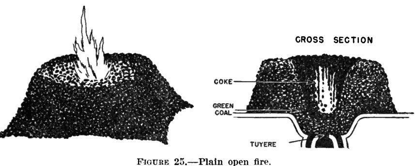
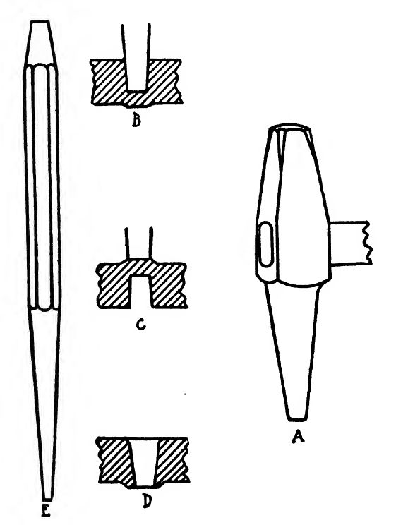
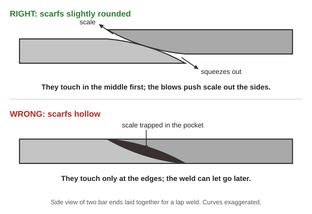
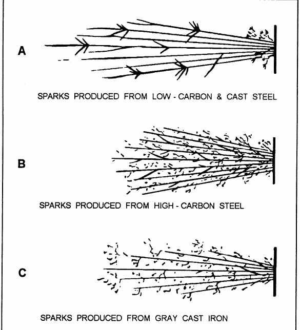
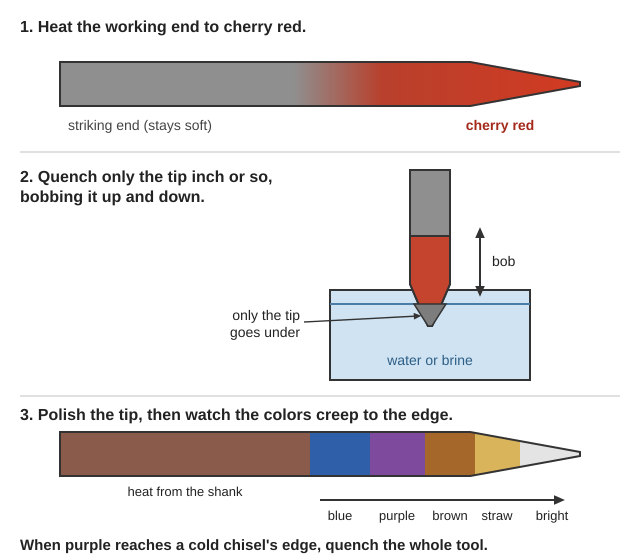
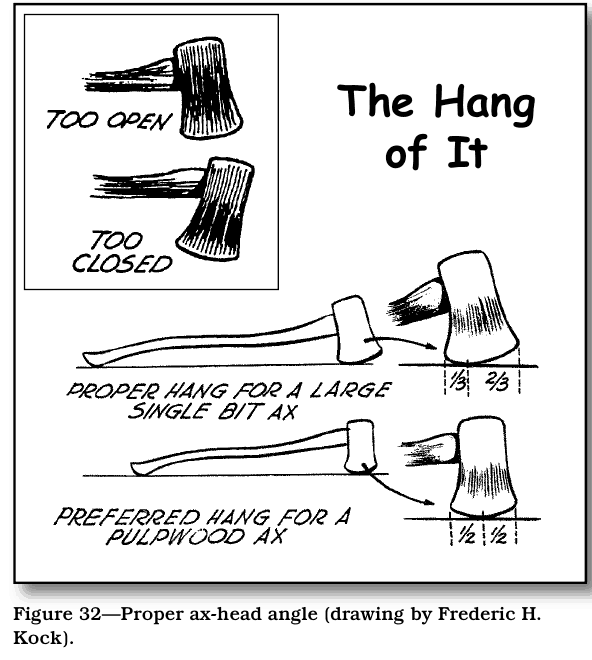

Guides › Making & repair · Emergency · Index A–Z
How to set up a simple forge, pick the right scrap steel, forge and heat-treat it, and make or repair basic hand tools — chisels, punches, tongs, knives, axes — plus how to sharpen and re-handle the tools you already have. The full books are in Blacksmithing-Tools\ (Blacksmithing, Heat-Treating-Steel, Hand-Tools); axe and crosscut-saw manuals are in Engines-Motors\Chainsaws-and-Saws. Farm blacksmithing (plow shares) and a short Practical Action brief are in Homestead-Skills\Food-Crafts-Tools.
⚠️ Rules that prevent the worst injuries
- Hot steel looks exactly like cold steel. Assume everything near the forge is hot; pick things up with tongs, and set hot pieces down where no one will grab them.
- Eye protection at the anvil, grinder and when quenching. Never use a cracked grinding wheel, never wear gloves at the wheel, stand aside when you switch it on. (Navy Steelworker, p. 22)
- Never heat galvanized (zinc-coated) metal indoors — the fumes cause "metal fume fever." Strip the zinc first (rule of thumb: soak overnight in vinegar) and work outdoors. Drinking milk does not help, despite old advice (TM 10-440, p. 60 still recommends it — ignore that).
- Quench oil can catch fire. Use a metal container with a close-fitting metal lid next to it, enough oil to fully cover the piece, and plunge it in quickly and completely. Never put water on an oil fire — smother it with the lid. (Rule of thumb) Oil fires usually start when there's too little oil for the piece. (Practical Action Blacksmithing, p. 3)
- A coal or charcoal forge makes carbon monoxide — work outdoors or under an open-sided roof.
- Fire season: Illinois Valley summers are dry. Keep a full water bucket or trough by the forge for embers as well as quenching (Practical Action, pp. 1–2), clear dry grass and leaves well back from the forge, and never leave a fire unattended. (Rule of thumb)
- Oily rags can catch fire by themselves. Throw them out or keep them in a bucket of water. (USFS An Ax to Grind, p. 34)
Rule-of-thumb setups; the books have full plans.
Homestead-Skills\Fuels), or coal turned to coke in the fire. Keep the fire clean: rake out clinker (glassy lumps), and work in the hot center. Screen coke to get rid of dust before you use it. (Practical Action, p. 2; Charcoal, Coke, Clinker)Running the fire (TM 10-440, pp. 26–27; cross-sections of open and side-banked fires and a hollow fire; building the fire):

Coke burns in the center right over the tuyere; green (unburned) coal packed round the edges cokes slowly and feeds it (TM 10-440, p. 27).| Fire problem | Likely cause | Fix |
|---|---|---|
| Steel comes out heavily scaled | Fire too thin, too much air | Build the fire deeper; less blast |
| Fire won't get hot | Clinker choking the tuyere; wet or dusty fuel | Rake out clinker; screen fuel |
| Fire spreads and wastes fuel | Too much loose fuel, no banking | Pack damp fuel around the edges |
Anvil, Tuyere, Bellows, Swage block, Hardy tool.
📚 Go deeper: ICS Blacksmith Shop Equipment — forges, blowers, bellows and anvil tools; Peace Corps Basic Techniques of Blacksmithing — building a forge and tools from scrap; TM 10-440 — fuel and fire management; Peace Corps Charcoal Making — making forge charcoal.
| Color | About °F | What it's for |
|---|---|---|
| Dull red | 1,050–1,175 | Stop hammering — steel worked colder than this cracks. |
| Cherry red | 1,250–1,375 | Hardening temperature for most carbon steel; bending. |
| Orange to yellow | 1,725–1,975 | Normal forging heat — hammer here. |
| Bright yellow-white, "flowing" surface | about 2,000 and up | Forge welding (mild steel and wrought iron). A few sparks are normal at welding heat. |
| White, throwing a shower of sparks | hotter still | Burned. The steel is ruined — cut that part off. |
(°F from TM 10-440's color table, p. 25; colors look different in different light and to different eyes, so learn them on your own forge.)
High-carbon steel burns at a lower heat than mild steel, so forge tool steel no hotter than orange-yellow. Burned steel can't be fixed by any later heat treatment. Keep hammering until the steel cools to a low red — forging refines the grain and makes it tougher. (TM 10-440, p. 24)
Basic moves: drawing out (hammering thinner and longer), upsetting (hammering the hot end to make it thicker), bending over the anvil horn or edge, punching holes hot, cutting on a hardy (a chisel set in the anvil), twisting, and forge welding. Ilgen's Forge Work and the Selvidge Shop Manual walk through each one step by step. Drawings: drawing out, upsetting, bending, hardy and chisels, top and bottom fullers; Blacksmith.
Punching a hole (TM 10-440, p. 33; drawing): center-punch the spot, heat to a good working heat, drive the punch two-thirds of the way through, flip the piece, and punch out from the other side over the anvil's round (pritchel) hole. Cool the punch often so it doesn't soften, and drop a little dry coal in a deep hole to stop the punch sticking.

Punch A: drive it about two-thirds through (B), turn the piece over and drive it through on the mark (C), then finish over the pritchel hole (D) (Selvidge, pp. 36–37).Forge welding, step by step (Selvidge, pp. 45–47; TM 10-440, pp. 30–31):

Rounded scarfs meet in the middle and squeeze the scale out; hollow ones meet at the edges and trap it (a diagram drawn for this guide).| Forging problem | Likely cause | Fix |
|---|---|---|
| Cracks while hammering | Worked below dull red | Reheat sooner; stop at dull red |
| Sparks and a crumbly end | Burned | Cut back to sound metal |
| Weld won't stick | Not hot enough, dirty fire, no flux, scale between faces | Clean fire, flux at bright red, reach full welding heat |
| Weld lets go later | Hammered after it cooled; hollow scarfs trapped scale | Round the scarfs; weld in fewer, hotter heats |
| Thin tip burns before the thick part is hot | Fast heating | Heat slowly and keep the thin end back from the hot spot (Drew, p. 63) |
📚 Go deeper: Selvidge Blacksmithing Shop Manual — every basic operation as a one-page job sheet; Ilgen Forge Work — drawing, upsetting, bending and welding explained; TM 10-440 — heat colors, forging and welding in brief.
(Peace Corps Basic Techniques of Blacksmithing, p. 31)
| Steel | Found in | Good for |
|---|---|---|
| Low carbon — won't harden | Car body panels, most rebar (Rebar), nails, bolts, rail spikes (Railroad spike), pipe, drums | Hooks, hinges, brackets, tongs, anything that bends instead of cuts. Forge-welds easily. |
| Medium carbon — hardens | Leaf and coil springs (Coil spring), axles, torsion bars, shock-absorber rods | Chisels, punches, hammers, axes, hoes, pry bars, springs. The best all-round tool stock. |
| High carbon — hardens hard | Old files, saw blades, drill bits, dies, bulldozer blades | Knives, scrapers, wood chisels, plane irons — tools that must hold a keen edge. |
Sources disagree on springs. The Peace Corps puts car springs, axles and torsion bars in the medium-carbon group; Practical Action calls coil springs, leaf springs and torsion bars high carbon. Test each piece and treat springs as hardening steel either way. Practical Action also warns that rebar often has a bit more carbon than true mild steel. (Practical Action, p. 5)

At the grinder (wheel on the right): low-carbon steel throws long, plain streams; high-carbon, bushy streams full of bursts; gray cast iron, short streams (Navy Steelworker, p. 23).Spark testing, Leaf spring. More pictures: Carbon steel.
📚 Go deeper: Peace Corps manual, scrap identification — what's in scrap and how to test it; Navy Steelworker Vol 1 — spark and chip tests with pictures; Practical Action Blacksmithing brief — mild, medium and high carbon steel from old vehicles.
| Color | About | Use |
|---|---|---|
| Pale yellow | 430 °F | Engraving and lathe tools, scrapers |
| Straw | 460 °F | Taps, punches, dies, knives for a very hard edge |
| Brown-yellow (deep straw) | 500 °F | Wood chisels, drills, plane irons, hammer faces |
| Purple | 530–540 °F | Light cold chisels, shears, axes |
| Blue tinged with purple | 550 °F | Ordinary cold chisels |
| Blue | 570–600 °F | Springs, picks |
The further toward blue, the softer and tougher. Books disagree a little — one old table puts most chisels and knives at light blue — so test your tool and adjust. (Bacon, p. 263; Selvidge, p. 59; TM 10-440, p. 26)
One-heat method for chisels and punches: heat the working end to cherry red, quench only the tip inch or so (bob it up and down), pull it out, quickly polish the tip, and watch the heat from the shank run colors toward the edge. When the right color reaches the edge, quench the whole tool. (Steelworker, p. 34; Selvidge, p. 58)

One heat for a cold chisel: the colors creep from the hot shank to the edge, and you quench it all when purple arrives; real colors vary with the light (a diagram drawn for this guide).Many pieces at once: temper them in a pot of oil over the fire with a thermometer instead of by color — steadier and more even. (Bacon, pp. 263–264; tempering kettle with its lid)
If the tool doesn't work right:
| Problem | Likely cause | Fix |
|---|---|---|
| Edge chips or breaks in use | Too hard | Reheat gently to the next softer color and quench (Selvidge, p. 59) |
| Edge bends or dulls fast | Too soft — tempered too far, or never got hard | Re-harden and temper less (rule of thumb) |
| File still bites after quenching | Low-carbon steel, or not hot enough | Test the steel; heat to full cherry red |
| Soft spots | Steam pockets in the quench | Move the piece in the quench; use brine |
| Cracked in the quench | Too hot, quench too harsh, thick-and-thin shape, sharp inside corners | Harden at cherry, not hotter; use oil for thin or high-carbon pieces |
| Warped | Uneven heat or uneven entry into the quench | Heat evenly; plunge straight in, thick end first (Drew, p. 64; an axe going in thick part first) |
Tempering colors. More pictures: Hardening, Heat treating.
📚 Go deeper: Bacon Forge Practice and Heat Treatment of Steel — temper colors and oil-bath tempering; Woodworth Hardening, Tempering, Annealing — deep detail on heat-treating tools; Navy Steelworker Vol 1 — annealing, hardening, quench media; Selvidge — annealing, hardening and tempering job sheets.
Sharpening a plow share — gardens and fields here depend on it (Drew Farm Blacksmithing, pp. 62–64; drawing out a share's edge; Ploughshare):
📚 Go deeper: Peace Corps manual — axe, hoe, tongs and hammer projects; ICS Tool Dressing — reforging and re-tempering worn tools; Drew Farm Blacksmithing — farm repairs, chisels and plow work; Richardson Practical Blacksmithing Vol 2 — tongs and shop-made tools.
Hanging an axe handle (USFS An Ax to Grind):

Laid flat, a well-hung ax touches the table a third of the way from the heel (An Ax to Grind, p. 24).Sharpening:
Edge angles for digging and trail tools (USFS Handtools for Trail Work):
| Tool | Bevel |
|---|---|
| Axe | About 25°, slightly convex, fan-shaped 2–3 in back |
| Pulaski | Axe blade like an axe; adze (grub) blade with about a ⅜-inch bevel (p. 25; drawing) |
| McLeod and draw hoes | 45° on the outside edge; no need to hone (pp. 26, 28; hoe drawings; McLeod) |
| Mattock grubbing blade | 35° on the underside (p. 27; drawing) |
| Shovel | About 45° on the top (inside) face, filed from below the foot rest to the point (p. 29; blade shapes) |
| Carpenter's adze | 30° on the underside, then whetstone (p. 46; Adze) |
| Digging bar | Keep the factory bevel (p. 30) |
Hammers and grinders (Army TM 9-243 Use and Care of Hand Tools):
Axe, Pulaski, Mattock, File, Whetstone.
📚 Go deeper: USFS An Ax to Grind — hanging and sharpening axes step by step; USFS Handtools for Trail Work — using and sharpening digging and cutting tools; Disston Saw, Tool and File Book — jointing, setting and filing hand saws; TM 9-243 — Army care and repair of every common hand tool.
Look before you try it. 🖼️ = drawings in the books on this drive; 📷 = photos in the offline Wikipedia.
Forge, fire and anvil
Forging operations
Steel and heat treatment
Making tools
Axes and hand tools
The old books use coal forges and some chemicals now known to be dangerous (cyanide for case-hardening, asbestos). Use their methods, not their chemicals.